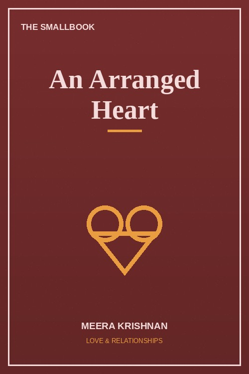

Library › Authors › Meera Krishnan
Books by Meera Krishnan
Meera Krishnan has one book in the library. Every book here is read down to the big idea, the lessons, the lines worth keeping and the actions worth taking. Start with the summary, then buy the full book if it earns a place on your shelf.

An Arranged Heart
2022 · 8 min · 8 lessons
Choice is not the same as wisdom. Meera Krishnan, sociologist and herself happily arranged-married for 30 years, argues that the arranged system screens for what predicts durability, and the dating system screens for what predicts a good first month.
Meera Krishnan studies arranged marriages across India, the diaspora and their modern, semi-arranged hybrids, and asks what the system gets right. Its screen, family fit, values, life plans, finances discussed in daylight, selects for the variables that actually predict thirty year outcomes. Dating's screen, attraction and banter, selects for the first season. Her argument is not that parents should choose, but that modern choosers should borrow the checklist while keeping the choice, and the veto.
Lessons in the summary
- Screen for the Thirty Year Variables Early
- The Veto Is the Modern Invention That Saves the System
- Commitment First, Feelings Compounding
- Families Are Due Diligence, Not Decoration
- The Questions Arranged Couples Ask in Week One
- Horoscopes, Checklists and the Uses of Ritual
- When the System Fails: Exit, Honour and Data
- The Diaspora Hybrid Is the Laboratory
Lines worth keeping
- Attraction is a wonderful spark and a terrible architect.
- The arranged system asks: can we build a life? Dating asks: do I feel something? Both questions matter. Order matters more.
- Love is not found fully built. It is constructed, by two people with compatible materials.
Questions Meera Krishnan helps answer
Read nearby authors next
- Brené Brown 3 books
- Esther Perel 2 books
- Alain de Botton 1 book
- Clara Whitfield 1 book
- Daniel Okafor 1 book
- Erich Fromm 1 book
- Gary Chapman and Jennifer Thomas 1 book
- Ines Duarte 1 book